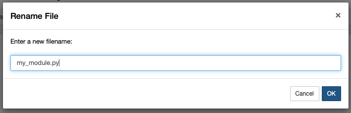

Modularisation¶
We have already looked at how we can make the code that we can write modular by having functions, which we can reuse.
However, there is an additional level of modularity that we will look at now.
This is where we write our own modules and import them into our Python code.
We have already looked at importing modules such as numpy and scipy, however as we will see we can create our own modules and import the functions that we include in them.
The first thing we need to do is to write a Python module. We can do this with the JupyterHub framework, from the file directory, where you would normally select to open a new Notebook, instead choose “Text File”.

This will open a window, were we can write our Python module, but first we should rename it.
The name of a Python module that we can create can be anything that would be suitable as a variable name, followed by the extension .py.
For example, here we will name our extension my_module.py.

In this module, we can write some functions. Let’s include a simple “Hello World!” function to show the utility.
def hello_world(name):
"""
This is a simple, Hello World function.
Args:
name (str): A name to concatentate to the print.
"""
print(f"Hello World {name}!")
If we now save this file (File -> Save) and then open a Notebook in the same folder as the new module, then we should be able to import my_module and run the hello_world function.
import my_module
my_module.hello_world('Andrew')
Hello World Andrew!
Functions within modules will act in exactly the same way as those in a Notebook and objects may be returned as normal. We can imagine how we could create very complex code within a Python custom module and then the Notebook interface could be clean with a lot of Markdown based explanation of what is going on “under-the-hood”.